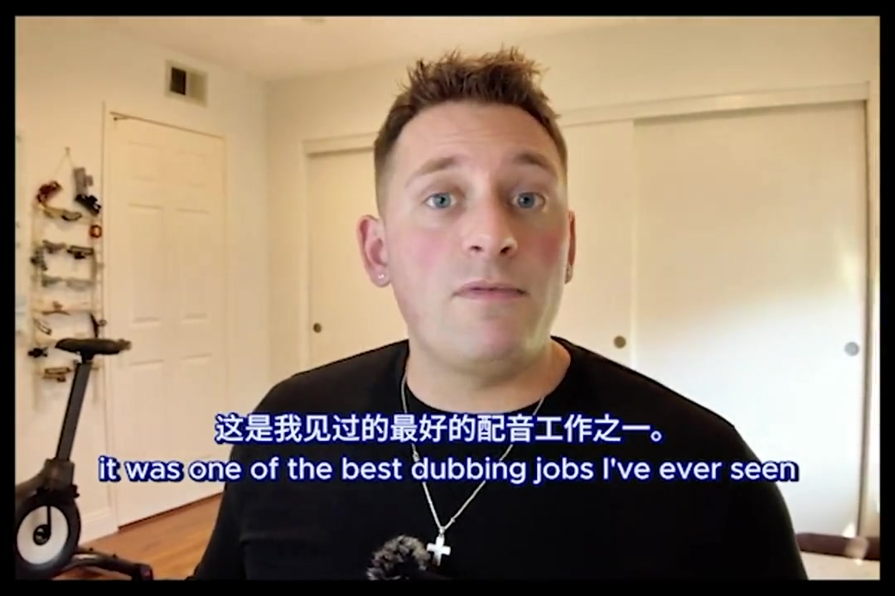
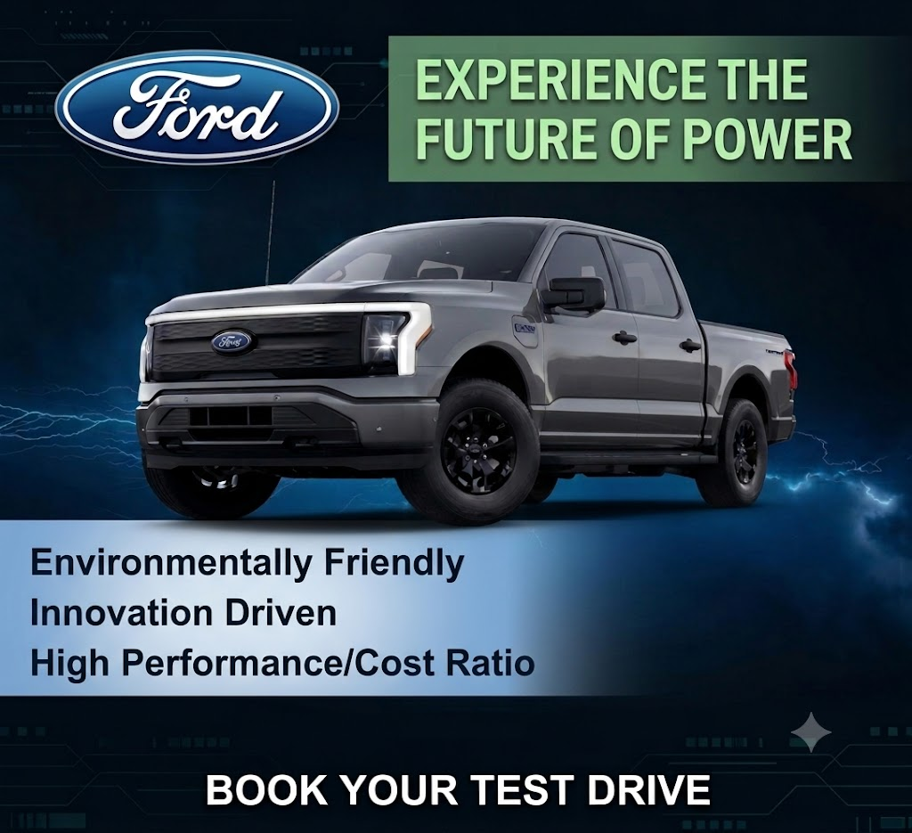
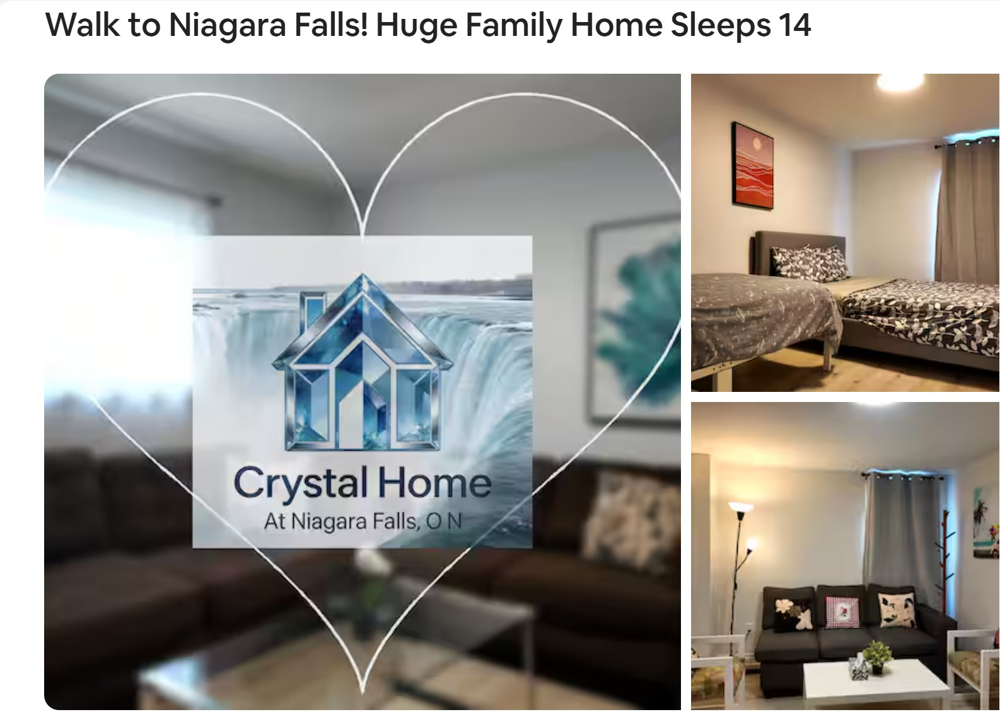

Video · Podcast · Poster · Web
Work produced with traditional multi-media tools — the craft foundation that Mediara AI builds on.
🎬 Video
Long-form video essays and short-form social content.

Bridging Worlds: The Reception of Ne Zha 2
A five-minute essay on how Chinese animation travels globally while keeping cultural authenticity.
Short-Video Content & Social Strategy
Platform-native short video produced inside a communication and marketing function.
🎙️ Audio / Podcast
Research panels and interview series, produced end to end.
WellTech Talk: Aging & Isolation
A five-segment research panel translating a systematic review into accessible audio.
Peer-Interview Podcast Series
Hosted, recorded and edited interview episodes built around community discussion.
🖼️ Poster
Campaign and promotional print design.

Ford F-150 Lightning Poster
Promotional poster for Ford's electric truck, from competitive analysis to final mockup.

B&B Multi-Platform Marketing
Seasonal campaigns across Airbnb and Vrbo, with QR-coded welcome gifts driving offline-to-online growth.
🌐 Web
Front-end builds, UX audits and product case studies.
Eren Yeager Fan Page
A five-page interactive fan site built from Figma wireframes to live deployment.
ZARA Website Audit & Redesign
Heuristic evaluation of ZARA Canada's store, then a full redesign of the key purchase flow.
Legible — Bill Simplification
A web app that makes everyday bills understandable through plain language and progressive disclosure.
Smart Commute Exchange
A tri-campus platform proposal encouraging students to choose transit over driving.